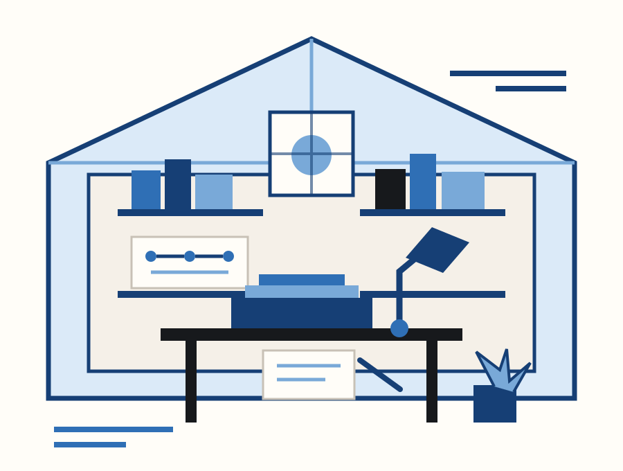

One-Process Rescue
The front doorOne recurring admin or operational irritation. We trace what is really happening, find the cause, show the Better State and give you the sensible first moves. It stands on its own.
£149fixed price
Small-business repair · Bristol & UK
House of Carol looks at the business as people actually experience it — the process, hand-offs, documents, website, tools and customer journey — then repairs the parts that have stopped keeping pace.
You do not need to know what the solution is. That is our job.
The House rule
Make the business easier to run and easier to buy from.No transformation theatreIN THE WINDOW · KEY-PERSON RISK
One job is the work you hired them for. The other is being the undocumented operating system. Growth, holiday or illness eventually sends you the invoice.
Check where your process depends on memoryThe Counter
This is not a lead form. Pick the things that feel familiar and the Counter will show what the House would inspect first. Nothing is sent, saved or put into a marketing funnel.
Nothing leaves this page. The Counter simply shows what the House would look at first.
No diagnosis yet — which is exactly how a counter should behave before you tell it anything.
The live enquiry desk remains closed on this preview site. This interactive tool does not submit information anywhere.
The Repair Menu
The House is not a subscription machine. Some businesses need one stubborn process fixed. Others need somebody to walk the whole place and see how several irritations connect.
One recurring admin or operational irritation. We trace what is really happening, find the cause, show the Better State and give you the sensible first moves. It stands on its own.
A broader diagnostic for a small business or defined part of one: customer journey, operations, documents, digital tools, website, communication, controls and key-person dependency. Strengths are protected; problems are prioritised.
Where the agreed change is within House competence, we can separately scope the practical artefacts or configuration: forms, templates, SOPs, document systems, simple workflows, website/content improvements and similar low-risk work.
For the occasions when fixing one bit would leave the rest fragmented. A Refit joins a finite set of connected improvements into one controlled sequence with testing and handover. Not an endless transformation programme.
The Workbench
Until real customers give permission for case studies, the Workbench uses clearly labelled fictional demonstrations. The point is to show the judgement — not manufacture a track record.
Invoices arrive by email, receipts appear on paper or a phone, purchases are typed into a spreadsheet, the bank statement is used to reconstruct gaps and Friday evening becomes the weekly control system.
The tempting answer is another receipt app. The useful answer comes first: ask what the accountant actually needs, identify one front door for evidence, and stop recreating fields that already exist somewhere authoritative.
Buying technology before that question is answered risks creating a fourth place for the same information.
The redesigned process starts with the accountant’s minimum requirement, chooses one evidence route, records only genuinely missing information at the easiest point, and uses the bank as a completeness check rather than a detective story.
If repetitive work remains after simplification, then technology has something coherent to automate.
Fictional demonstration. No customer, testimonial or measured saving is represented.
Take this repair apart in full →House Notes
The House will publish less, but better: observations from real operational problems, customer experience, design and technology. No daily AI porridge.
Because processes are often built one sensible decision at a time. A spreadsheet solves Tuesday. An email workaround solves Friday. A new person adds a check. Three years later the business is running a process nobody ever chose as a whole.
The repair begins by distinguishing genuine control from historical sediment.
A spreadsheet can be the right tool. It can also be a manual bridge between two places that should never have needed a bridge. Automating the bridge may make the wrong process faster.
The House asks what decision the file supports, which source is authoritative and whether the work can disappear before anybody writes a flow.
If a customer cannot understand what you do, trust what happens next, find the right route or recognise the business they met offline, the website is creating operational demand elsewhere: calls, clarification, abandoned enquiries and manual rescue.
Website repair therefore starts with the customer journey, not a prettier hero image.
The House
Carol was the founder’s mother. Blue was her favourite colour, and she loved Britain around the late 1920s and early 1930s. The House takes the useful parts of that spirit: confidence, craft, useful modernity, clear public information and things made to last.
It is not fake heritage. The business is modern, independent and based in Bristol. The point of the name is to remember that even very practical work can be thoughtful, recognisable and beautifully made.
If the logo disappeared, would you still know it came from the House?

The enquiry desk
The House is still in controlled preview. The Counter above works entirely in your browser, but this form deliberately does not collect submissions until the permanent business email, privacy stack and enquiry route have been tested end to end.